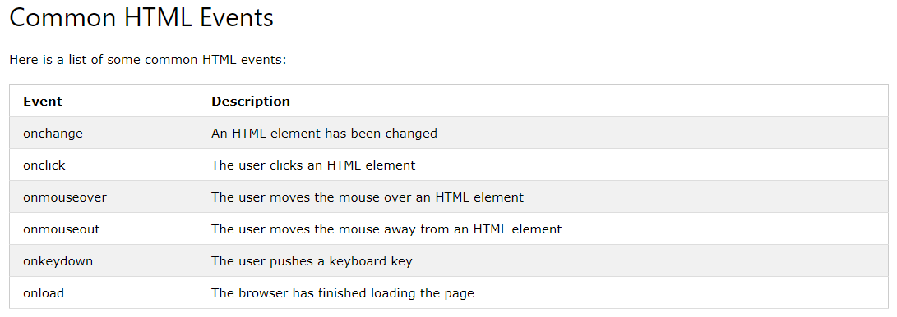

Event handlers can be used to handle, and verify, user input, user actions,
and browser actions: Things that should be done every time a page loads.
Thingsthat should be done when the page is closed. Action that should be
performed when a user clicks a button.
An event listener is a procedure or function in a computer program that waits
for an event to occur. Examples of an event are the user clicking or moving
the mouse, pressing a key on the keyboard, disk I/O, network activity, or an
internal timer or interrupt.
